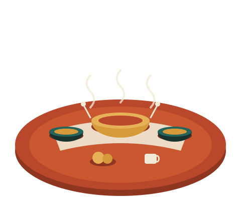

Community Soup Kitchen
Hot, nutritious meals served every weekday to anyone who needs one — no questions asked.
Learn more →Since 2015, Hands of Hope has served hot meals, taught employable skills, and connected people sleeping rough with safe shelter — one table at a time.

Hot, nutritious meals served every weekday to anyone who needs one — no questions asked.
Learn more →Practical, job-ready training in hospitality, basic computing, and trades for unemployed young people.
Learn more →A trusted network of partner shelters, with case workers who help people find a safe bed for the night.
Learn more →Not at all. We provide a short orientation before your first shift, and our coordinators pair new volunteers with experienced ones for the first few weeks.
We publish an annual impact report and keep our changelog of programme updates public. Corporate sponsors also receive quarterly financial summaries.
Yes — from ingredient donations to skills-training internships, we design partnerships around what your business can offer. Reach out via our enquiry form.